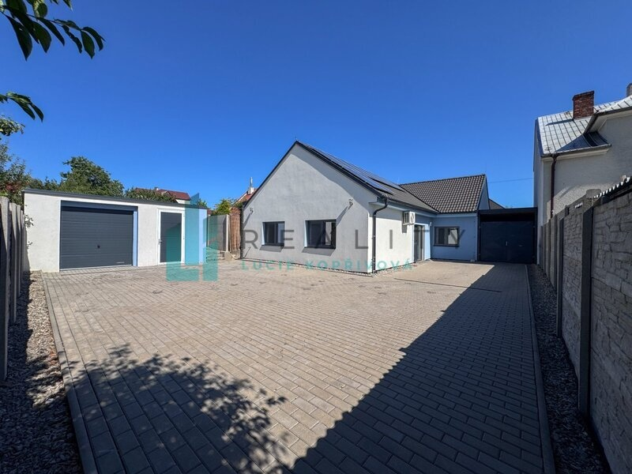
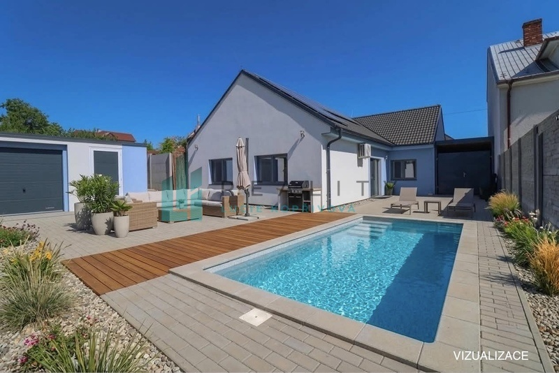
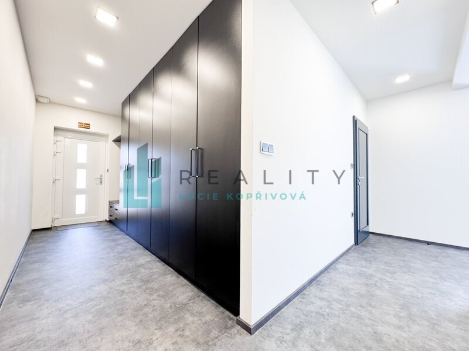
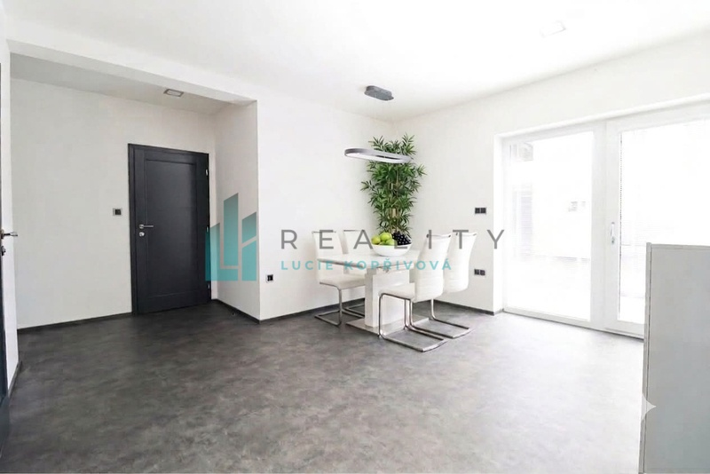
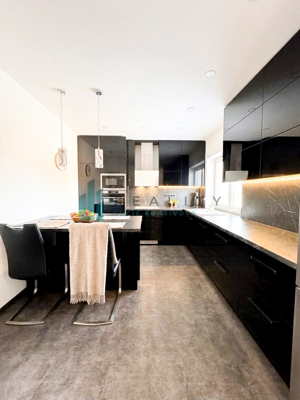
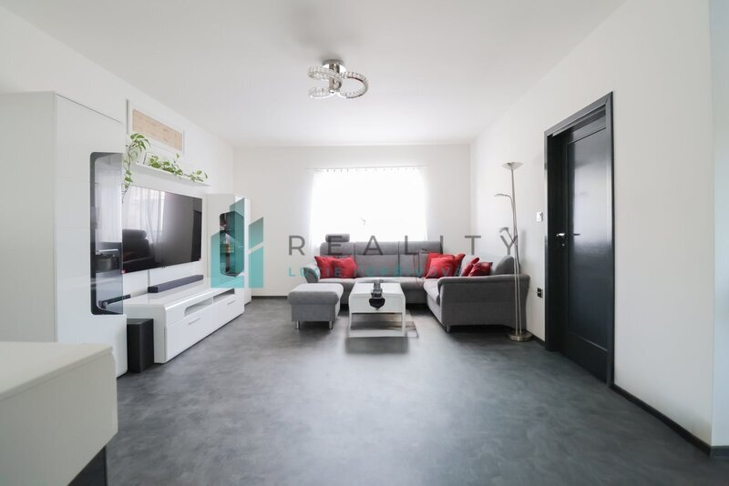
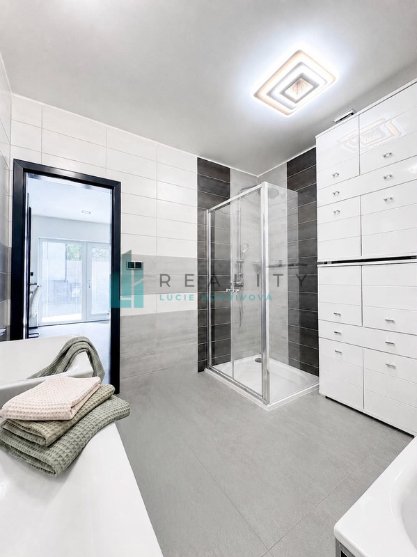
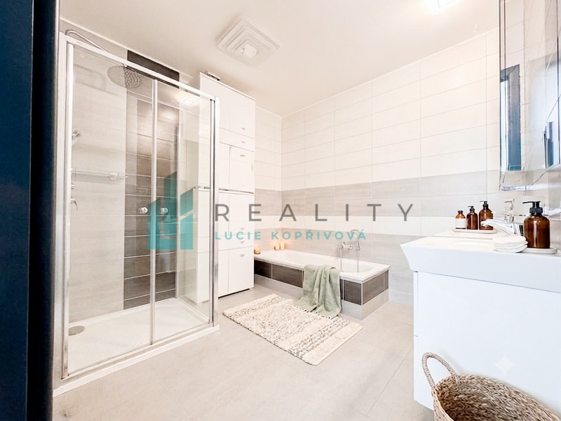
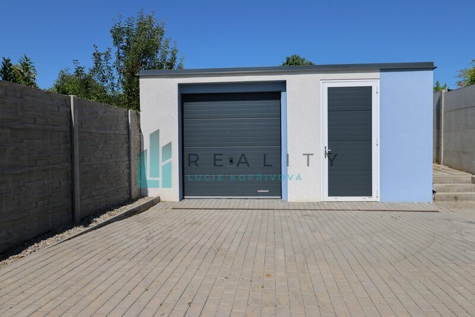

Základní údaje
- Novostavba
- Energetická třída B
- Dispozice
- 4+1
- Plocha
- 113 m²
- Stav
- Novostavba
- Energie
- B
Prohlédněte si nemovitost
1 / 15








Popis
Nabízím Vám ke koupi zděnou novostavbu z roku 2021 s dispozicí 4+1, postavenou v řadové zástavbě, která perfektně propojila praktický interiér se soukromím uzavřeného dvoru a s prostorově velkorysou zahradou plnou ovocných stromů.
Čím vás tento dům nadchne?
*Mimořádně úsporný provoz: Díky vlastní fotovoltaické elektrárně a energetické třídě B se měsíční náklady na bydlení pohybují kolem skvělých 3 000 Kč.
*Komfort novostavby bez kompromisů: Moderní zděná stavba z roku 2021 vám ušetří roky plánování a budování.
*Maximální tepelný komfort a čerstvý vzduch: Podlahové vytápění zajišťuje příjemné teplo od nohou v celém domě, zatímco rekuperace se stará o neustálý přísun čerstvého vzduchu.
*Promyšlené zázemí pro relaxaci i rodinu: Uzavřený dvůr za domem poskytuje absolutní soukromí pro posezení s přáteli či grilování, zatímco navazující zahrada s ovocnými stromy je ideálním místem pro děti i vášnivé zahrádkáře.
*Prostor pro koníčky i auta: K domu náleží hned dvě garáže a praktický menší sklad. Místa na auta, motorku, dílnu, sezónní věci i zahradní techniku tak budete mít vždy dostatek.
*Koupelna jako malé wellness: Nabízí to nejlepší z obou světů – rychlou ranní sprchu v prostorném sprchovém koutě i večerní relaxaci ve vaně.
Technické info:
*Dispozice: 4+1 (obývací pokoj, 3 samostatné pokoje, kuchyně, technická místnost, hala, koupelna, samostatná toaleta).
*Přízemní zděná novostavba.
*IKompletní napojení – elektřina, plyn, obecní voda i kanalizace.
*Podlahové vytápění
*Rekuperace
*Energetická třída B (úsporná), fotovoltaická elektrárna (FVE).
*Měsíční náklady: Cca 3 000 Kč / měsíc.
*2× garáž, sklad, uzavřený dvůr, zahrada s ovocnými stromy.
Ježov je klidná a malebná obec v okrese Hodonín na pomezí Kyjovské pahorkatiny a pohoří Chřiby, která vám nabídne ideální rovnováhu mezi venkovskou pohodou a výbornou dostupností do měst. Do Kyjova se autem dostanete za pouhých 8 minut, v Uherském Hradišti jste za 25 minut a v Brně jste do hodiny. Rodiny s dětmi ocení mateřskou i základní školu přímo v obci a pro každodenní nákupy skvěle poslouží místní prodejna potravin i pošta. Po náročném dni si pak vychutnáte relaxaci v okolních lesích nebo u Ježovského rybníka, které máte doslova za domem.
Tento dům je ideální volbou pro rodinu i páry, kteří hledají klidné, bezstarostné a finančně úsporné bydlení v příjemné lokalitě.
Plochy pochází z katastru nemovitostí a projektové dokumentace, jsou pouze informativní, kupní cena je za objekt.
---------------------------------------------
Upozorňujeme, že použitá fotografie v inzerátu je doplněna o profesionální 3D vizualizaci, která slouží jako inspirace pro budoucí uspořádání exteriéru a ilustruje vysoký potenciál tohoto prostoru.
---------------------------------------------
pro více info volejte makléře
Kde nemovitost najdete
Parametry
- Plocha podlahová
- 113 m²
- Plocha zastavěná
- 135 m²
- Plocha pozemku
- 729 m²
- Stav objektu
- Novostavba
- Konstrukce
- Cihlová
- Stáří objektu
- 5 let
- Vydaný certifikát
- B — Velmi úsporná